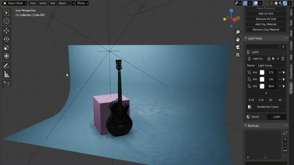
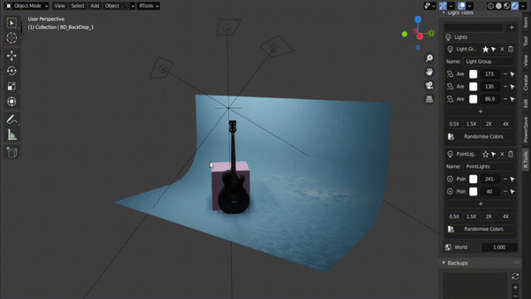
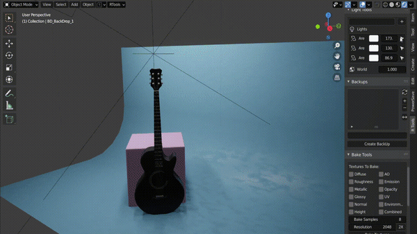

Light Tools¶
Create Light Groups¶
Select the lights you want to group and click the + button to create a group. All lights in the group can be manipulated together.Groups can be soloed and their light intensities can be increased or decreased proportionally.

Button |
Action |
|---|---|
Star |
Solo Group |
Arrow |
Select all lights of the group |
Cross |
Delete the group but keep lights in the scene |
Trash |
Delete the group with the all the lights in it |
+ |
Add Selected Lights to this group |
- |
Remove this light from this group |
Selected lights are highlighted with blue icons and the active light is highlighted with a yellow icon

Randomise Colors¶
Use the 1/2x,1.5x,2x and 4x buttons to multiply the light intensity of all lights and use the Randomize Color button to randomly change the color of each light.
